My first DIY fightstick: Part 1
Ever since I started practicing Street Fighter seriously (albeit with modest results), I’ve always wanted to make myself a custom fightstick. Now that I’m not working full-time for anyone, there’s no better time to Just Do It.
If you’ve done any research on DIY fightsticks, you’ll know that the 2 best places to find guides are Slagcoin and Shoryuken Tech Talk. I decided to follow the basic design on Slagcoin:

Materials and tools#
If you live in Hồ Chí Minh City like me, you can probably get everything you need from shops on Bạch Đằng Street. The only hard part for me was convincing a small wood shop to sell MDF panels cut to my specifications in small quantity:
- 4 pieces x 30cm x 20cm x 1cm *
- 2 pieces x 20cm x 4cm x 2cm
- 2 pieces x 20cm x 7cm x 2cm
- 1 piece x 26cm x 4cm x 2cm
- 4 pieces x 34cm x 7cm x 2cm *
All that set me back 120,000 VND. The cost was mostly for cutting labor instead of actual material. The items with asterisks (*) are those I bought in abundance to make room for drilling errors.
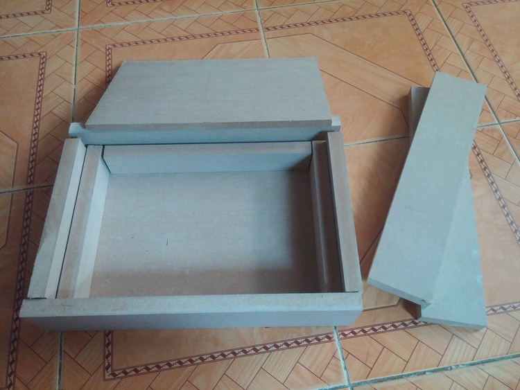
The top panel would be layered with 1 MDF and 2 plexiglass pieces (mad illustrating skillz, I know):
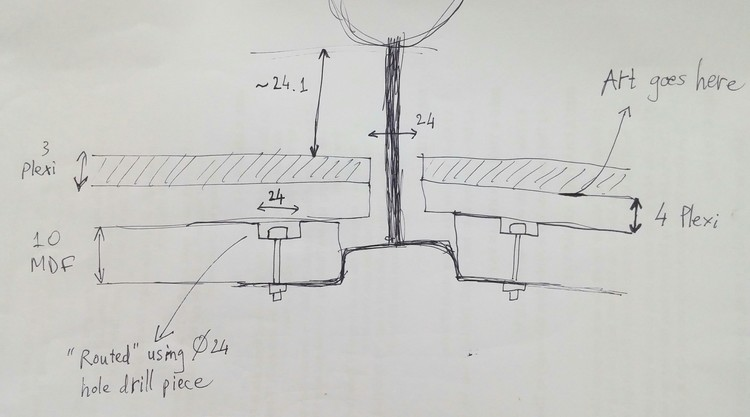
The bottom would simply be 1 MDF and 1 plexiglass so I could also insert bottom artwork.
Since I had zero woodworking experience, I joined the MDF pieces with simple butt joints and good old wood glue. You’ll notice that there’s a significant gap on one corner - turns out the shop wasn’t too accurate with their cutting. It’s not shown here but eventually I had to saw a longer MDF piece to replace it.
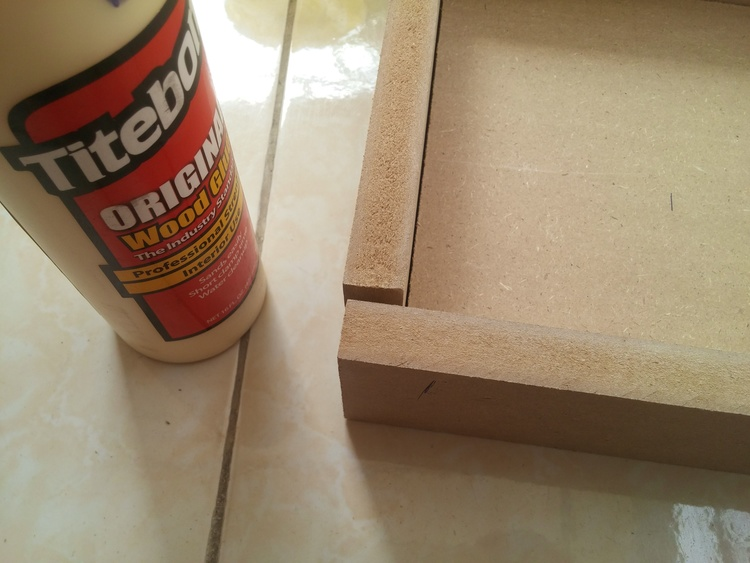
I already had a hand drill laying around so all it took was buying a couple of hole saws - 24mm and 30mm in diameter respectively. The bigger one was used for drilling main button holes while the other was for joystick hole and smaller front side buttons.
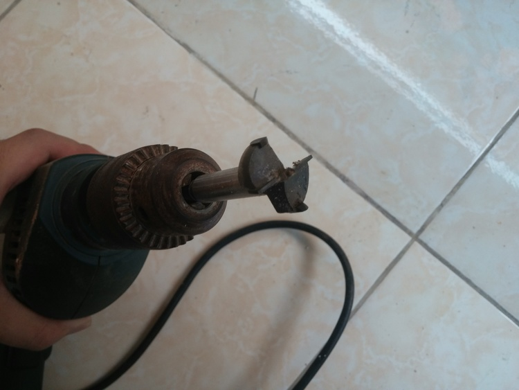
Don’t buy hole saws like the one below - you will not be able to drill through thick panels (like the 20mm thick one I bought):
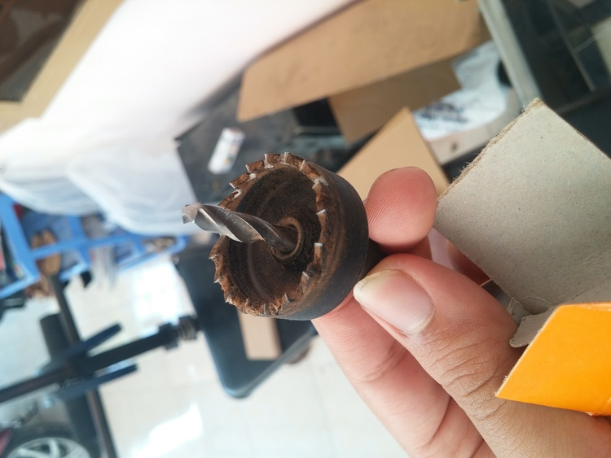
As for the actual parts, I ordered the joystick and buttons from Akishop. It ships from Japan so the shipping cost to Vietnam is much more reasonable than if I buy from the US. I also bought a Zero Delay PCB kit from ebay. This one even offers free shipping since it’s from China. This kit offers easy solder-free wires too so it saved me from a lot of trouble (I still can’t find where to quick-disconnect terminals to this date). I connected everything to my PC to test if things worked as expected:
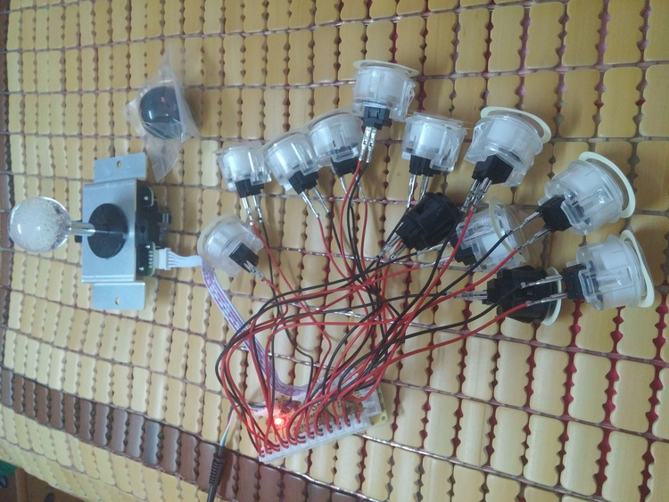
Quick note: the popular wisdom is to buy screw-in buttons for thick panels and scap-in for thin ones. However, as my panel is way too thick even for screw-ins, snap-ins are actually the better choice: you just need to put the buttons in normally - the 2 sides of the button will push against the hole and keep it there fairly firmly. I never had a problem with my previous stick which was build this way.
Actually making it#
I drilled holes in the front side: first using the 30mm bit to drill halfway, then went all the way with the 24mm bit. This allows a small button to be placed deep into the case, avoiding accidentally button presses.
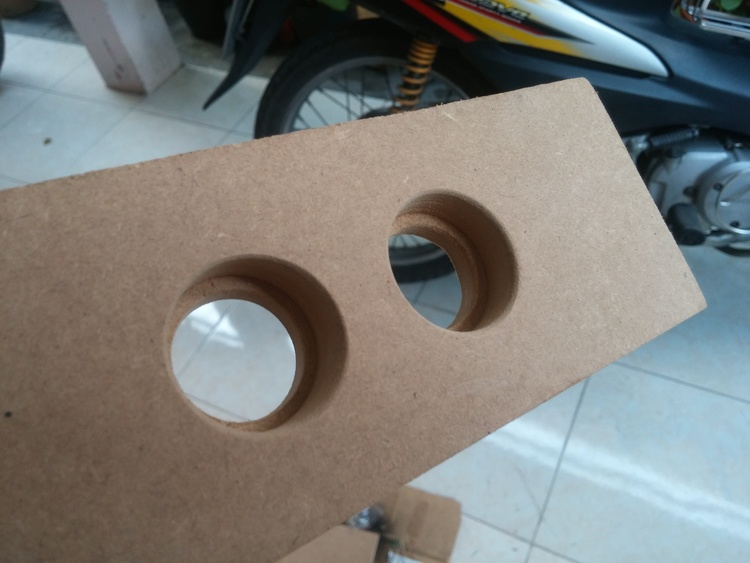
Then I glued the case body together. I didn’t have big clamps laying around so I had to make do with an elastic string. It worked terribly though.
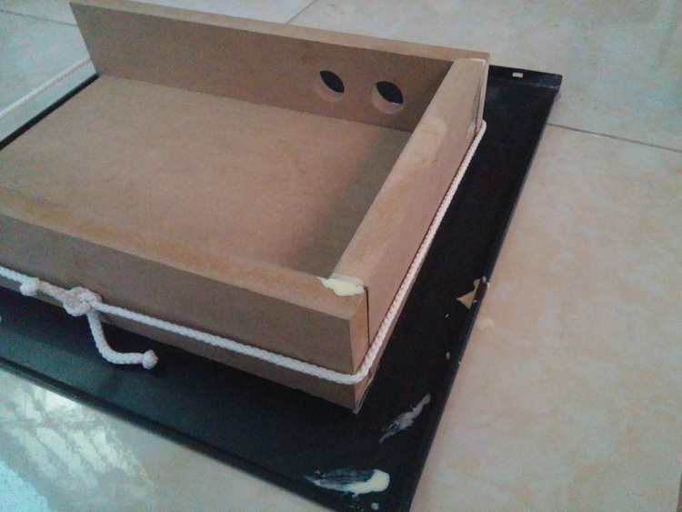
Note that the bottom panel was just there to keep the whole thing in shape. I took it out later:
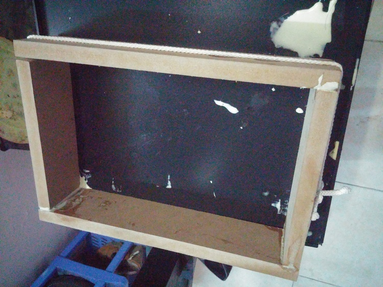
See the gap in the top left corner? That’s the gap I was talking about earlier. Good thing I had a spare piece laying around, so I sawed it to the correct length to use as a replacement:
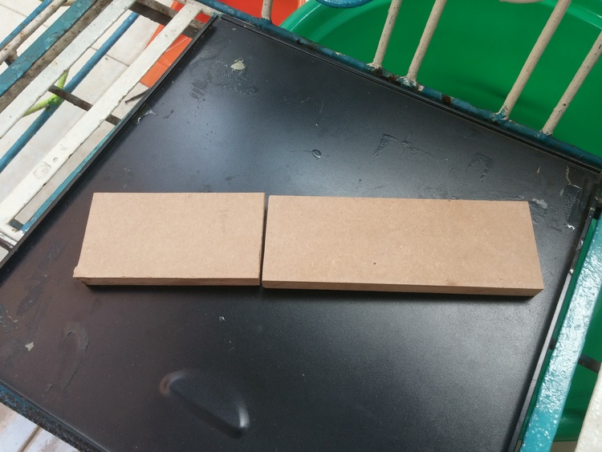
Now everything fitted together but there was some excess on one long side. Much sanding awaits!
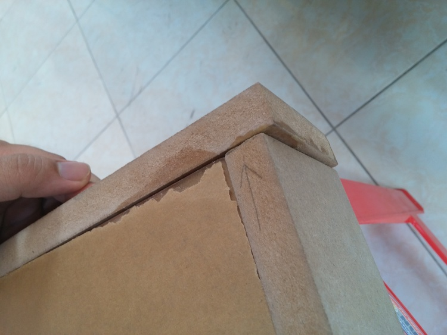
Initial sanding effort with 140 grit sandpaper:
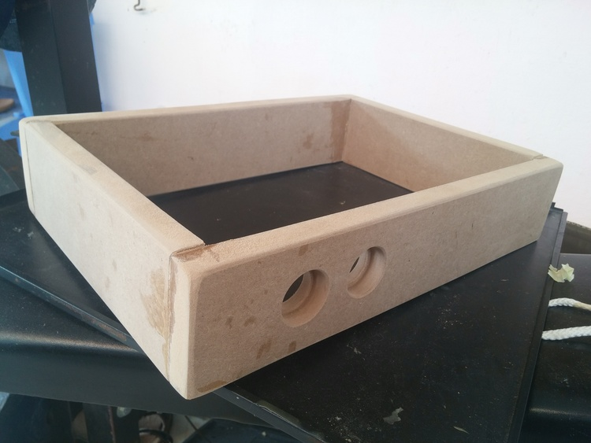
By the way, I recommend using a sanding block. It helps you apply more pressure evenly. I simply wrapped my sandpaper around a spare piece of MDF:
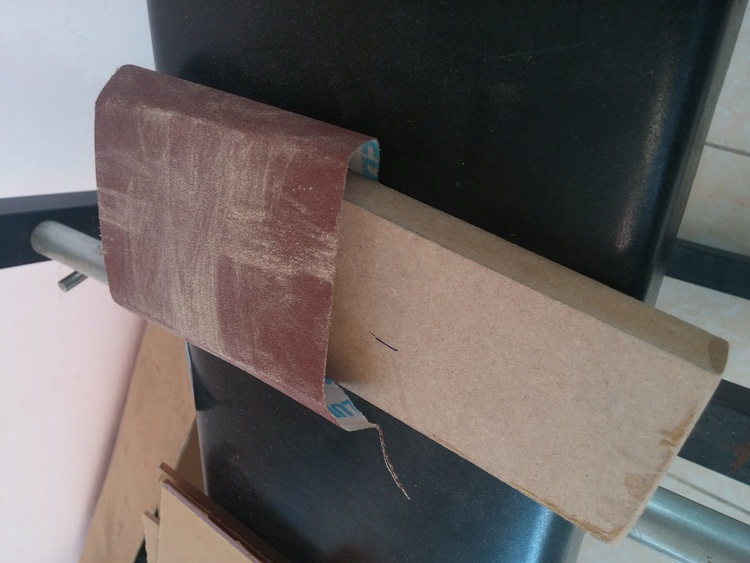
Now on to the inner sides. These would support the top and bottom panels. I used a long piece of scrap plexiglass to apply pressure instead of a clamp. This time I put one 10mm-thick wood panel and one 3mm-thick plexiglass panel under it to make sure the inner supports are glued at the correct position.
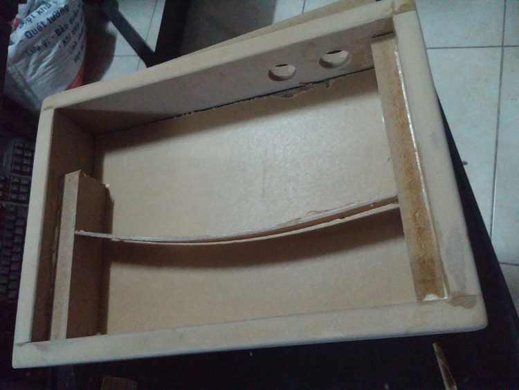
With all 3 inner sides glued:
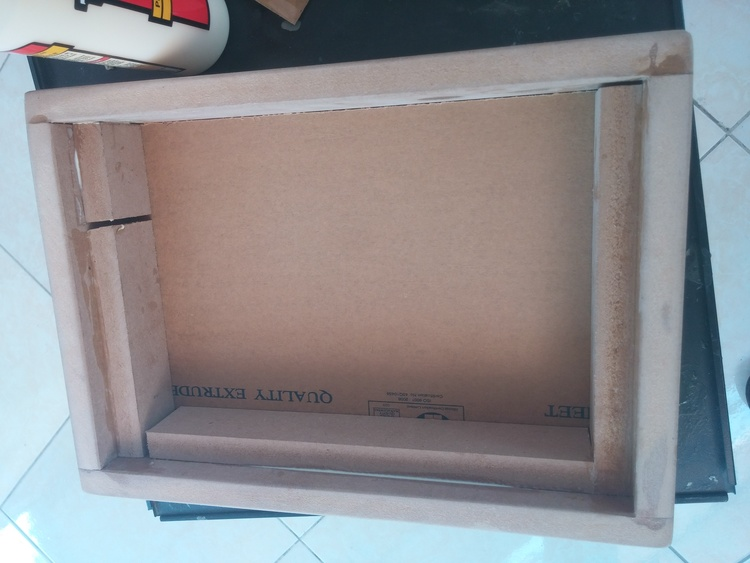
Now you must be wondering why I had 2 inner pieces on the left side. I originally wanted to save some space and weight by sawing those into shorter support bits instead of long whole pieces that covered the full length. After sawing the first piece I decided that it wasn’t worth the effort anyway so… there you have it.
Here comes the next challenge: putting paint on the MDF. There is an extremely elaborate method explained on Shoryuken Tech Talk that helps you achieve a mirror-like glossy finish. Of course I don’t have the tools and patience to follow all that, but I followed the first few steps (cover edges with non-absorbent material, sand and spray paint multiple times) to achieve an acceptably smooth finish.
Here’s the first step: cover edges with non-absorbent material. The tutorial suggested using spackling, which I have no idea how to obtain from here. I settled with something Vietnamese people “matic” (mastic, perhaps?) which my friends said was to be used for the same purpose. The thing was yellow-ish and much more runny than spackling. It was also difficult as hell to work with: the moment it’s spread on the MDF edge, it starts drying, at which point you can’t touch it again unless you want an ugly grungy finish (is that even a word?):
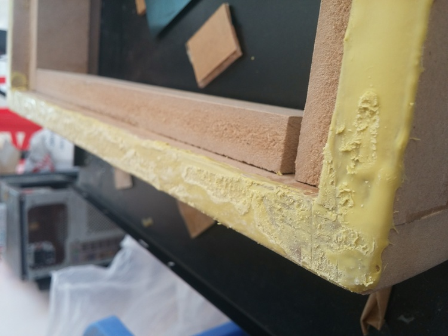
I waited for the yellow thing to dry, then sanded it again. After a first few coats with glossy black spray paint, things didn’t look too sexy:
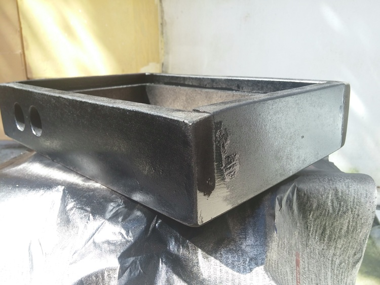
It did get better with sanding (1200 grit) and more coats though. But then I made the most stupid decision: glueing the top panel on before drilling:
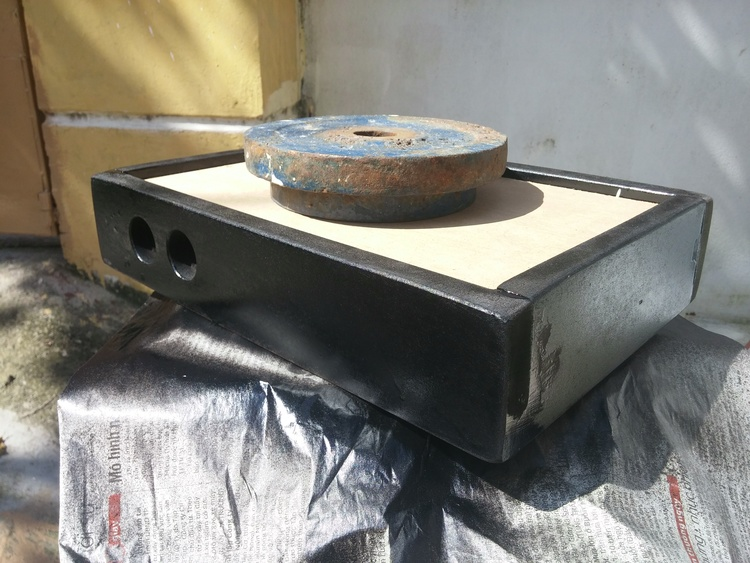
Now why was this bad? Because now I would be forced to drill top panel holes with the whole body attached, which will expose the whole thing to sawdust, which was generally PITA to clean up - the top panel made it a closed shape with corners and spaces all over the place. Also, if I screwed up the top MDF panel (which I eventually kinda did), the whole thing would be ruined.
As if that wasn’t enough, I did paint it too. The paint layer would later make disgusting drill holes:
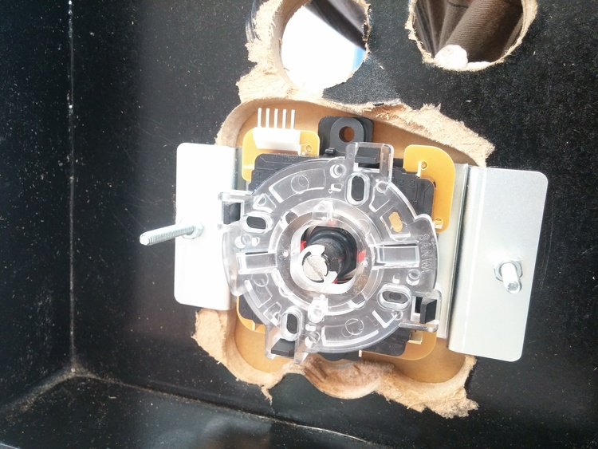
But I’m getting ahead of myself. Here’s how the case looked after a few more black coats and one clear coat (also put buttons in there to see how they fit):
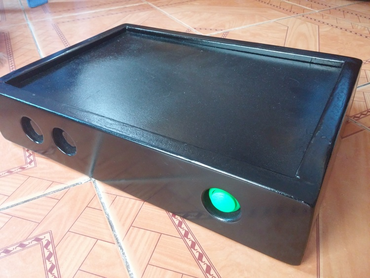
I did drill an extra button hole because I realized I’d need the “Playstation” button too if I want to use a PS4 controller PCB later (which I plan to do). Unfortunately I only ordered 2 small buttons from Akishop so I had to use a green Chinese button I had laying around.
Now here comes the hard part: drilling the top panel. As mentioned earlier, the top panel would be 3-layer:
I placed all 3 pieces onto the case, but with the 4mm plexiglass on top (in the plan it’s supposed to be in the middle - I’ll explain later). Then I printed the Blast City button layout found on Slagcoin and taped it onto the whole thing:
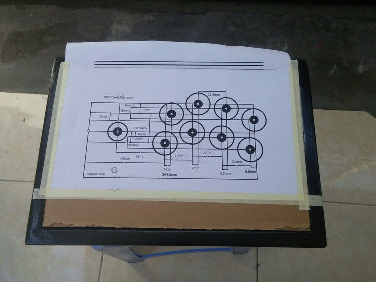
Notice the extra two holes I drew above and below the joystick hole. Those are for screw holes for mounting the joystick. This is why I put the 4mm piece on top: I was going to drill these two holes on the 4mm piece only to leave room for screw heads. This way I didn’t need to “route” the extra 2 holes on my MDF piece like the original plan (I was afraid the 10mm MDF thickness was already too thin).
After drilling the necessary holes, I removed the plexiglass pieces and drilled the aformentioned 2 joystick mounting holes into to MDF, then I placed the joystick mounting plate onto the surface to plot the rectangular part that needed to be cut off:
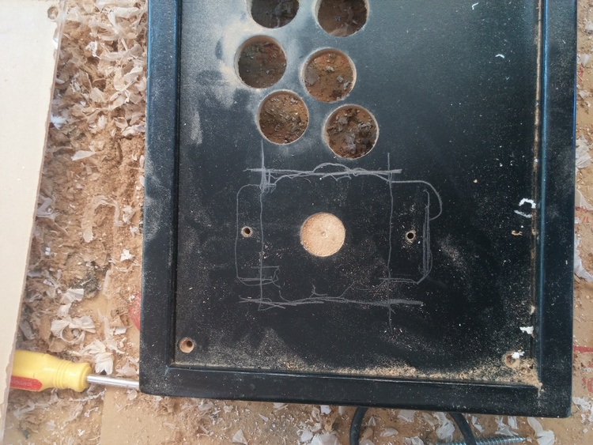
Since I don’t have any power tool, I used my handy hand drill with the circular hole saw to gradually drill out the shape:
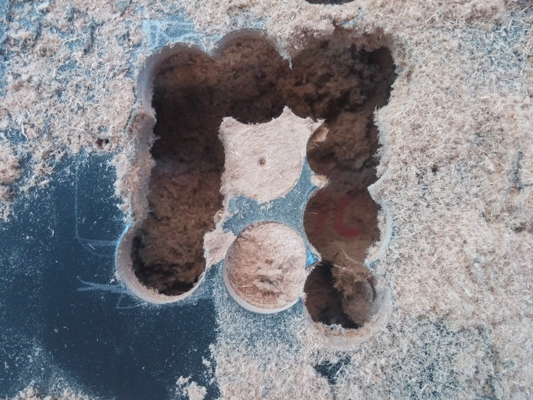
After much sanding and cleaning:
See the glorious tears? That’s what premature painting does to you. Friends don’t let friends paint prematurely!
Anyway, I also drilled 3 hole on the bottom to install the bottom pieces (1 MDF & 1 plexiglass). I also printed a quick picture as a placeholder artwork to see how it would look:
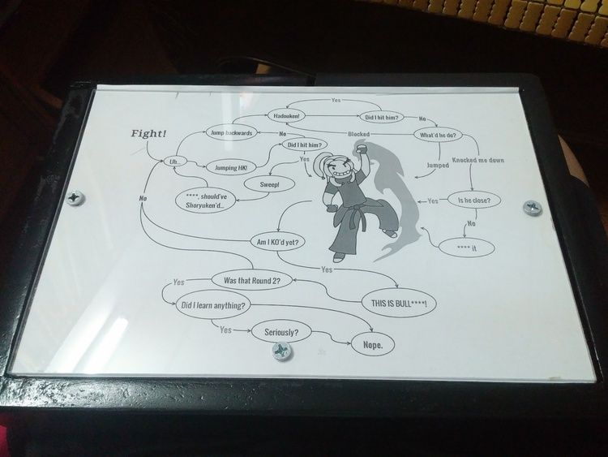
As I was excited to finish the putting the top panel together, I hit a wall: because I couldn’t possibly drill perfectly perpendicular screw holes, they could not property attach:
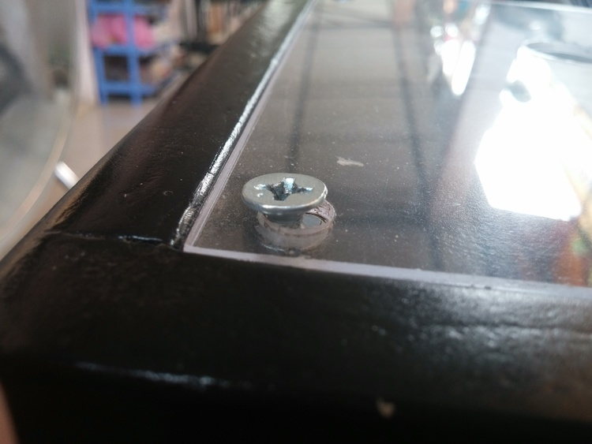
Also, thanks to the switching positions between the two plexiglass pieces, the button holes didn’t align anymore. I had to waste a buttload of time sanding the lower piece’s holes to make them bigger.
But that’s not even the worst issue: because the screw holes were not aligned, once I screwed all four corners, the top plexiglass piece flexed, creating a blatantly noticeable gap:

Um… that’s it (for now).#
That’s all of my progress so far. I’m visiting my local Fablab, which is advertised to have CNC machines and laser cutters so I’ll probably have a chance to produce more accurate panels. Hell, I may even redo the whole thing using machine-cut pieces for absolute accuracy and save myself from a world of pain.
Till next time!
Here's every post in My first DIY fighstick, in chronological order:
- My first DIY fightstick: Part 1 (you are here)
- My first DIY fightstick: Part 2